Given a single overhead photo of an UNO table with four players, a discard pile, and a small token marking whose turn it is, we recover the entire game state: which card is in the center, who is active, and exactly which cards each player is holding. We built this as a hybrid pipeline rather than a single end-to-end model: classical image processing handles the parts of the problem that are fixed and geometric (where the players sit, what the active-turn marker looks like), and a small object detector handles the part that is genuinely visual and variable (recognizing 54 distinct UNO card faces under rotation, overlap, and lighting). The split mattered more than any single component: it is the reason the pipeline stays interpretable and debuggable.
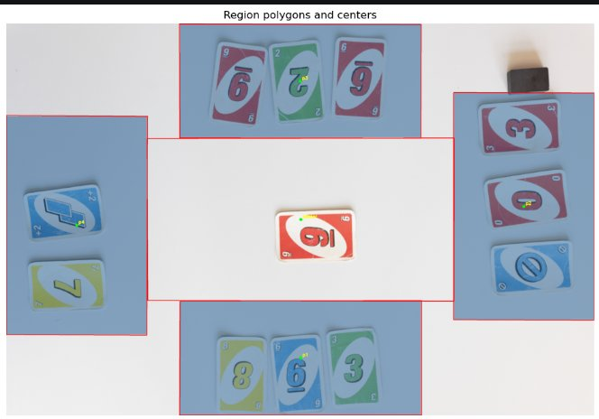
For every photo, the output we need is one structured row: the center card, the active player, and the (possibly empty) hand of each of the four players, encoded as a CSV line like r_5;b_skip;y_2. The dataset spans two visually different table setups (a plain white background and a busy printed tablecloth), each shot with cards either spaced apart or overlapping. Only 81 real training images came with full labels, and crucially, the labels tell you which cards are present, not where they are; there were no bounding boxes to learn from.
That single fact shaped most of the early decisions: any deep-learning component would need bounding boxes we would have to create ourselves, and with that few images, the model also had to be small enough not to overfit immediately.
We split the problem along a simple line: does this sub-task depend on pixel content, or on board geometry?
The four player regions and the center never move from photo to photo: the camera framing is fixed. Assigning a detected card to "player 2" is a geometry problem, solved once with precomputed region masks and distance maps.
The active-player marker has a narrow, consistent HSV color signature. A classical color-segmentation detector is more robust to lighting than asking a neural net to learn "find the small gray rectangle" from 81 images.
Recognizing which of 54 card faces is showing, under overlap, rotation, and partial occlusion, is the one sub-task genuinely about pixel content with high intra-class variation. That is where we spent our deep-learning budget.
This division meant every non-learned stage could be unit-tested and visually verified against ground truth before the learned stage was ever trained, which made debugging the eventual end-to-end errors much easier to localize.
Six-stage inference chain
Before finding cards in a photo we need to know what the table looks like without them. There was no clean "empty table" reference shot in the dataset, so we built one by hand: across several training images where cards covered different, non-overlapping areas, we manually masked out the card regions in each one and stitched the visible background patches from multiple photos into a single composite: one reconstruction for the white background, one for the printed tablecloth.
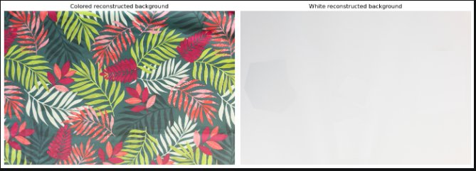
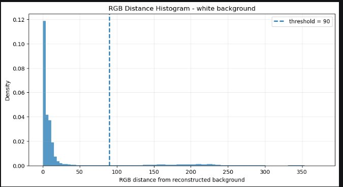
With that reference in hand, foreground extraction becomes a background-subtraction problem: blur both the input photo and the reconstructed background slightly (to absorb fabric texture and camera noise), take the per-pixel RGB distance between them, and threshold. The two background types needed different thresholds: pixel values on the white background cluster tightly near the top of the range, so a tight threshold (90) cleanly separates cards from table; the printed background's colors spread across a much wider range, so a looser threshold (119) was needed to avoid losing real foreground to noise.
The raw thresholded mask is noisy: fabric folds, shadows, and JPEG artifacts all show up. We cleaned it with a deliberately layered sequence of OpenCV morphological operations (close, open, dilate, erode, repeated, tuned by visual inspection) followed by skimage's hole-filling and small-object removal.
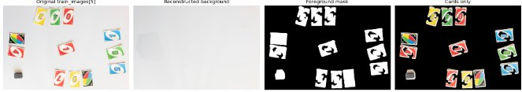
A player with no cards is still part of the output format (EMPTY), so we needed a cheap, reliable way to flag it. Rather than learn this, we reused the foreground mask: count foreground pixels falling inside each player's region, and if the count is below a threshold, call that hand empty.
The subtlety is picking the threshold. An "empty" hand can still contain a few stray foreground pixels, most commonly the active-player marker sitting at the edge of that region. So we set the threshold from the marker's own pixel area plus a safety margin rather than guessing a number: a region is only empty if it has less foreground than "one marker's worth" of pixels could account for. This gave us two thresholds (one per marker shape): approx. 93,300 px for the round marker, approx. 96,900 px for the rectangular one.
The active-turn indicator is a small token (a round coin on the colored background, a rectangular block on the white one) and each has a distinctive, narrow HSV color signature. We measured that signature directly from template photos of the markers rather than guessing ranges by eye.
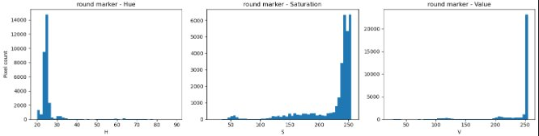
The detector: convert the photo to HSV, threshold to the marker's known range, clean the binary mask with morphological opening/closing, then look at connected components. Not every blob that survives thresholding is the marker; a card sliver or a JPEG-compression artifact can pass, so we filter candidates by area (close to the known marker size) and by shape: circularity for the round token, elongation and extent for the rectangular one, since "is this round vs. rectangular" generalizes across orientation in a way that simple width/height ratios do not. Whatever survives is assigned to the nearest player region, with a geometric sanity check as a fallback.
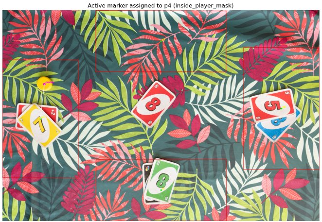
This method reached perfect active-player accuracy on every evaluated training image, which is why the final pipeline keeps it fully separate from the learned card detector: there is no reason to spend any of a tight 12M-parameter budget teaching a network to find a token whose color and shape are already known exactly.
This is the one part of the problem that is irreducibly visual: 54 card classes (four colors by ten numbers, plus skip/reverse/draw-2 per color, plus wild and draw-4), shown under rotation, partial overlap, and two different lighting conditions. We used YOLO11n (the nano variant, approx. 2.6M parameters, well inside the 12M budget) as a full-image object detector, with no pretrained weights, trained entirely from scratch.
A few choices were deliberate:
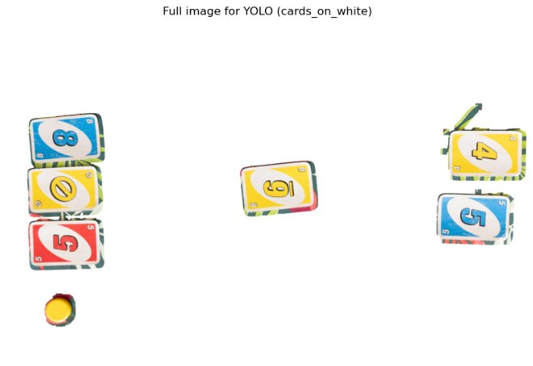
Real data was the bottleneck, so we manually annotated all 81 training photos with bounding boxes (the labels gave us which cards were present per region, which we used to guide (but not replace) manual box-drawing), then generated synthetic full-board images to make up the rest of a usable training set. The generator was not naive random placement: card rotation follows the region's real-world orientation, placement is spatially biased toward each region's center the way real hands tend to cluster, and rare card classes are oversampled using inverse-frequency weighting. For overlapping cards, the visible-only bounding box is computed automatically from placement order, so a buried card does not get a YOLO label for area no longer visible.
Training ran at imgsz=1280 for 100 epochs, batch size 8, with the standard Ultralytics detection loss (box regression + classification + distribution focal loss).
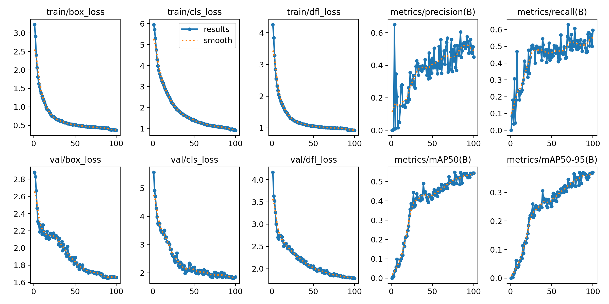
At inference, each YOLO box gets assigned to a region by checking whether its center falls inside a region mask; if not (a card straddling a boundary, or a detection box slightly off), it falls back to whichever region's mask is geometrically closest by a precomputed distance map. We chose mask-distance over simple "closest region center" because cards can sit far from their own region's centroid while still clearly belonging to it. The manual empty-hand result from step 4 then overrides anything YOLO predicted in a region we are confident has no cards, which suppresses a class of false positives the detector cannot otherwise be talked out of.
We tuned the final confidence and IoU thresholds (settled on conf=0.60, iou=0.50) by sweeping values against the actual project scoring metric on the training set (not against YOLO's own mAP), since the metric that matters (player-card multiset F1) does not necessarily peak at the same threshold as raw detection quality.
| Metric | Value |
|---|---|
| mAP@0.5 | 0.545 |
| mAP@0.5:0.95 | 0.372 |
| Precision | 0.449 |
| Recall | 0.597 |
| Parameters | 2.59M (budget: 12M) |
| Active-player accuracy | 100% on all training images |
End-to-end, on the project's own weighted metric (0.1·CenterAcc + 0.1·ActiveAcc + 0.8·F1) measured over all 81 labeled training images, active-player accuracy was 100%, confirming the HSV marker approach as a clean, fully solved sub-problem. Center-card accuracy and player-card F1 were the main drag on the composite score, exactly where we expected the bottleneck, given how little real, fully-annotated detection data the card detector had to learn from. Reference baselines: deep-learning baseline at 0.647, classical-only baseline at 0.570.
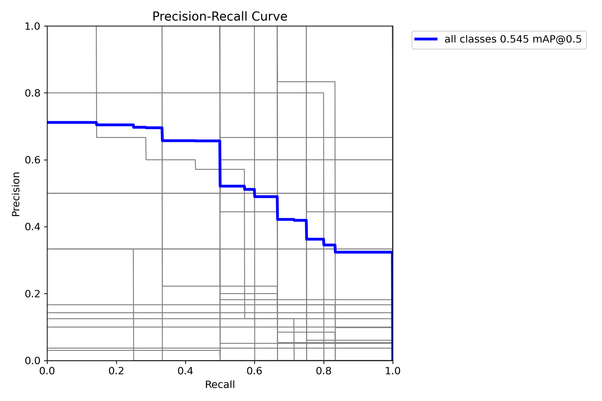
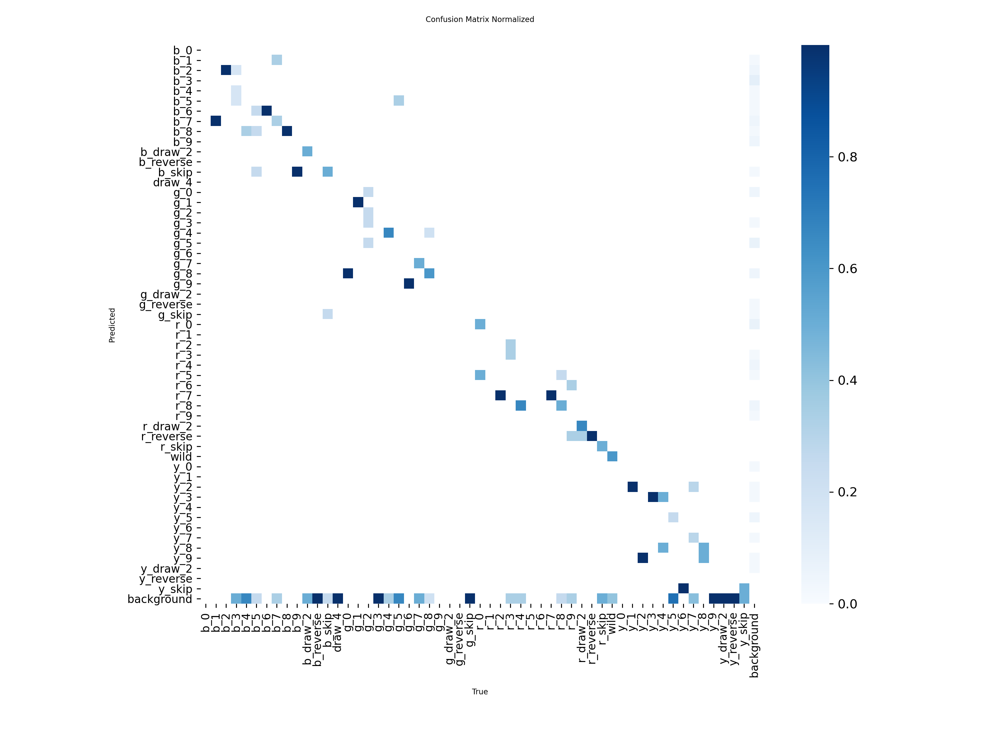
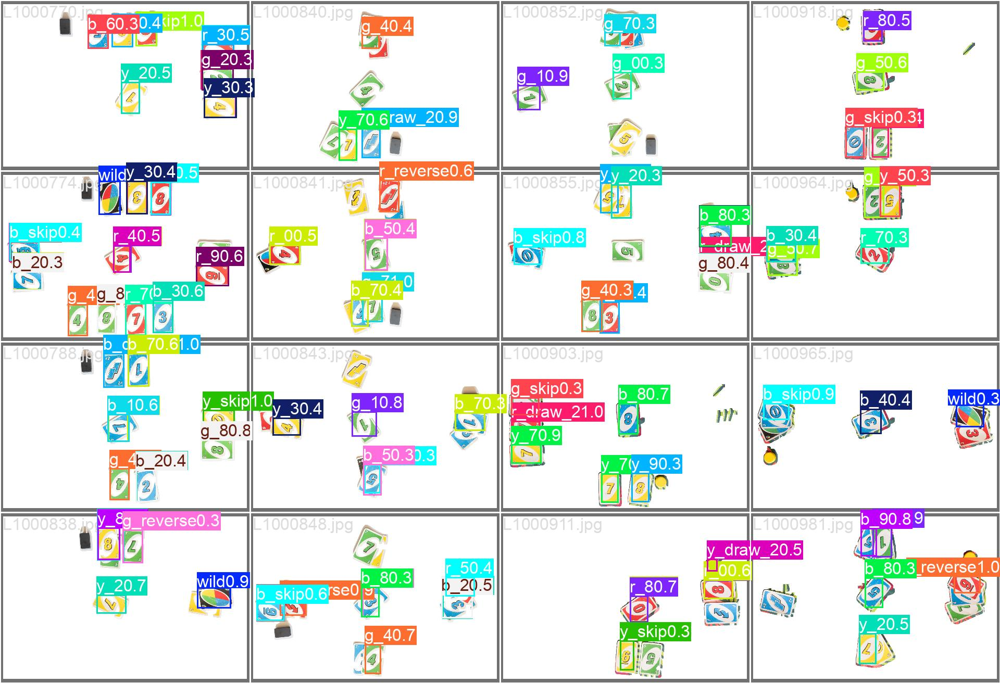